Safe RDT
Select and consistently orient candidate faces with edge-incidence and vertex-fan constraints. Open boundaries and multiple components are supported.
1 Huazhong University of Science and Technology2 Donghua University
* Corresponding author
Compact geometry. Detailed appearance.
Adaptive mesh connectivity meets residual per-face textures.
PSNR on Mip-NeRF 360
vs. MeshSplatting · 9-scene averageFewer faces in the ablation
Full method vs. baseline · 5.3M → 2.5MOpenGL on a MacBook Air M3
Garden · baked vertex-colored PLYThe idea
Triangle-based splatting connects novel-view synthesis with conventional mesh rendering, but dense tessellation and vertex-only appearance limit its efficiency and detail. T2-Splat combines adaptive mesh topology with residual per-face Mip-textures.
Safe Restricted Delaunay Triangulation initializes mesh connectivity. Dynamic Topology Evolution then reallocates triangles through edge collapse and vertex split. A second stage jointly optimizes vertex spherical harmonics and residual textures on the fixed mesh, recovering appearance detail with scale-adaptive filtering.
We evaluate rendering on Mip-NeRF 360 and Tanks & Temples, and surface reconstruction on DTU.
The method
Two stages, one compact representation.
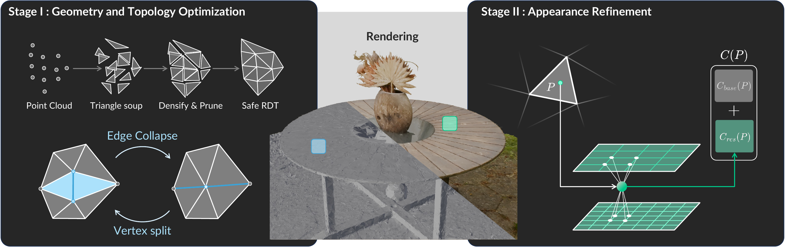
Select and consistently orient candidate faces with edge-incidence and vertex-fan constraints. Open boundaries and multiple components are supported.
Edge collapse removes redundant geometry; vertex split adds local degrees of freedom. Their relative rates control the final face budget.
Optimize per-face textures and vertex SH coefficients on fixed geometry. Scale-adaptive sampling preserves detail while reducing aliasing.
Visual results
Drag the divider to compare.
Use the arrow keys when a comparison is focused.
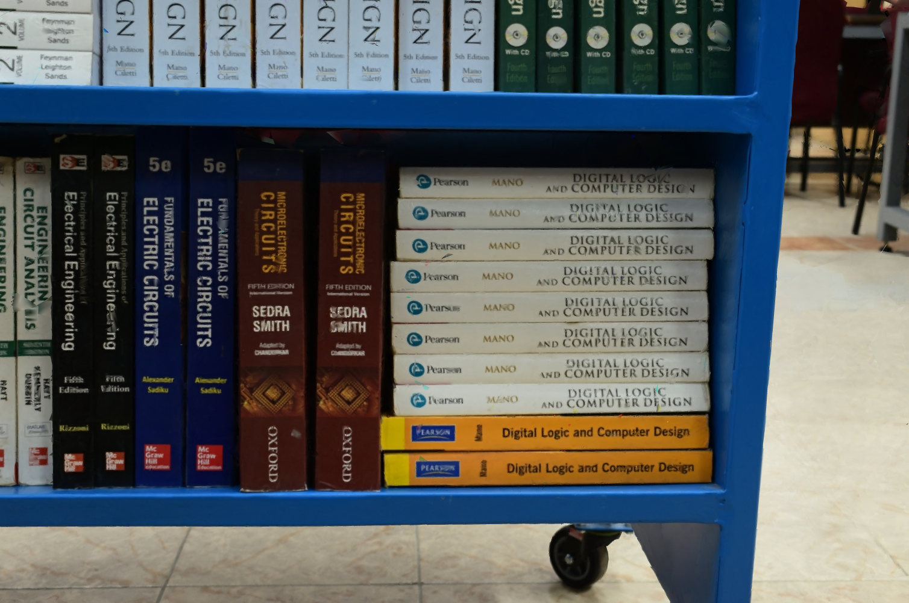
MeshSplattingT2-Splat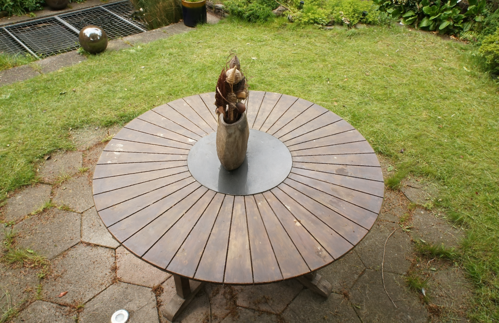
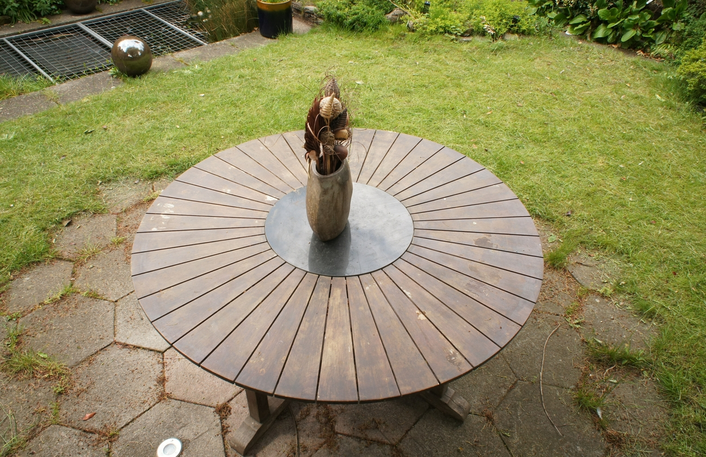
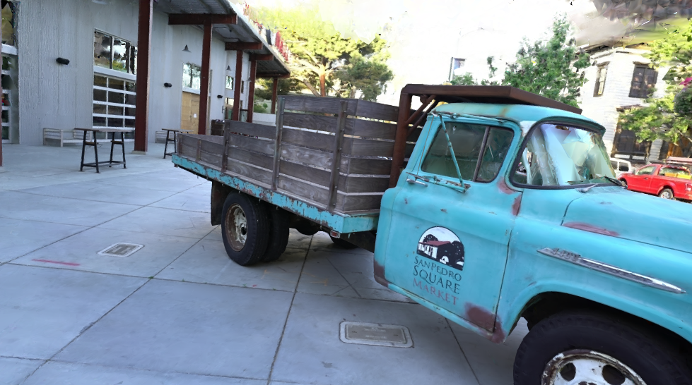
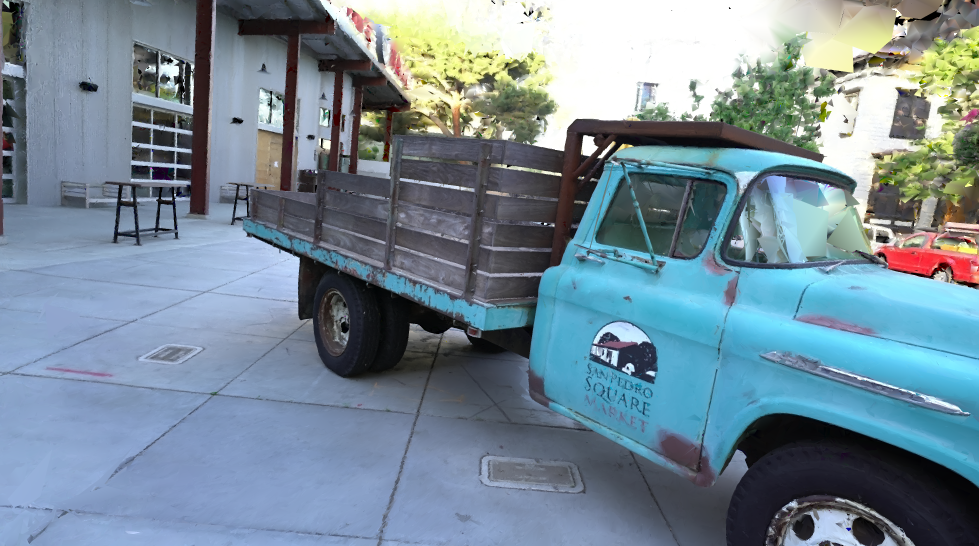
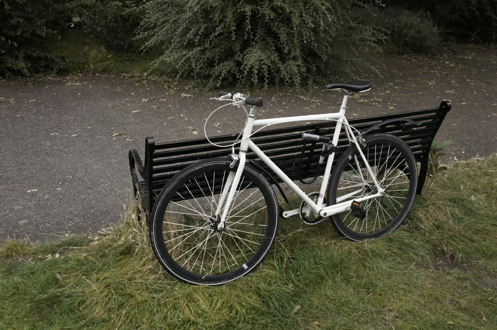
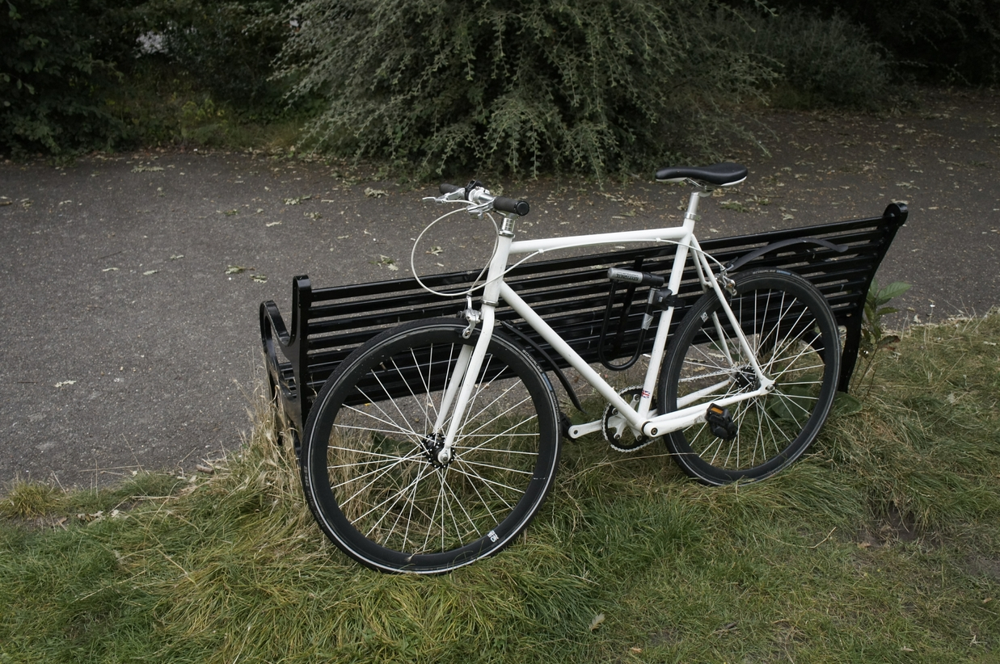
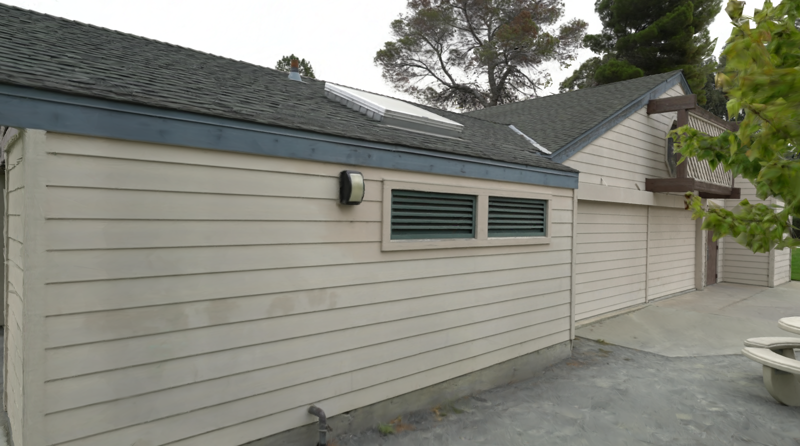
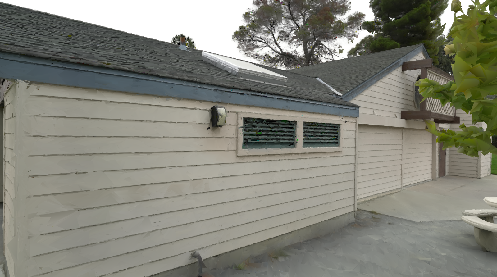
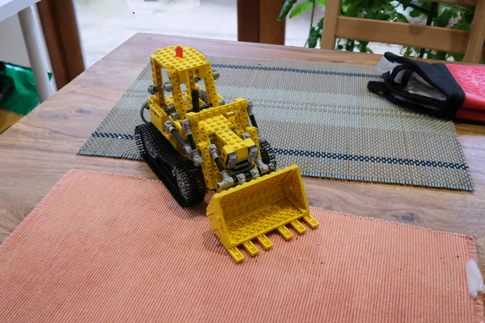
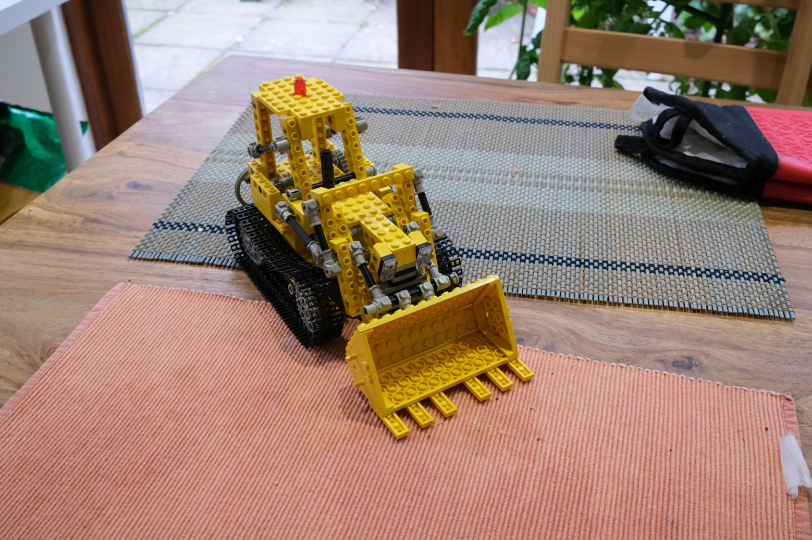
Comparisons use the supplied scene renders. Ground-truth views are reference photographs, not outputs of a competing method.
Measured results
Quantitative results from the paper.
Nine-scene averages · mesh-based renderings
| Method | PSNR ↑ | LPIPS ↓ | SSIM ↑ |
|---|---|---|---|
| MiLo | 24.09 | 0.323 | 0.688 |
| Gaussian Wrapping | 25.10 | 0.289 | 0.752 |
| MeshSplatting | 24.70 | 0.310 | 0.728 |
| T2-Splat | 25.49 | 0.234 | 0.779 |
Selected mesh-based baselines from Table 1. See the paper for the full evaluation.
Garden · DTE-controlled final face counts
The full configuration balances geometric detail and appearance quality.
Each mesh is produced by Stage I DTE, followed by Stage II appearance refinement. These are separate trained configurations, not a live simplification demo.
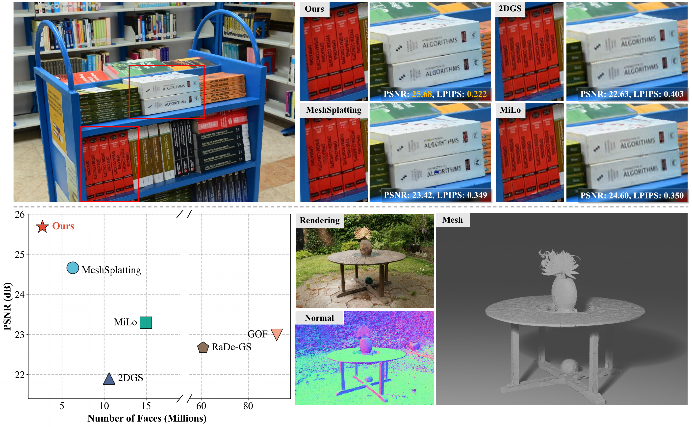
Beyond the renderer
Export to familiar graphics formats.
Bake SH and residual texture contributions into vertex RGB. The default export preserves the original vertices, faces, and mesh connectivity.
Bake per-face RGB textures into embedded PNG atlases with UVs and materials. The triangle count stays unchanged; face corners are expanded for independent UVs.
Preserves more intra-face texture detail, with additional texture storage.
About baked appearance. Both exports are static and do not preserve view-dependent effects. PLY may smooth fine texture detail; GLB viewer mipmaps do not exactly reproduce training-time per-face LOD sampling. The reported file size and FPS refer to the baked PLY, not the full trainable appearance model.
Resources
The paper includes the method, implementation details, ablations, and additional results.
Citation
@inproceedings{tang2026t2splat,
title = {T2-Splat: Adaptive Topology Mesh Splatting with Texture Residuals},
author = {Tang, Zhihao and Zhang, Youjia and Zhao, Mingbo and Yang, Wei},
booktitle = {Advances in Neural Information Processing Systems},
year = {2026}
}